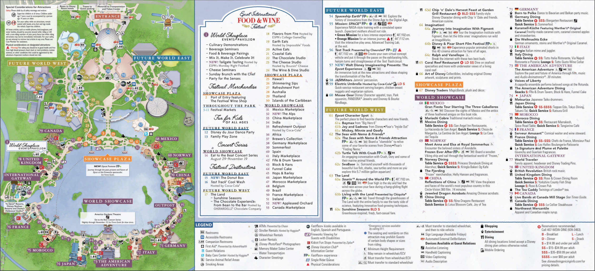
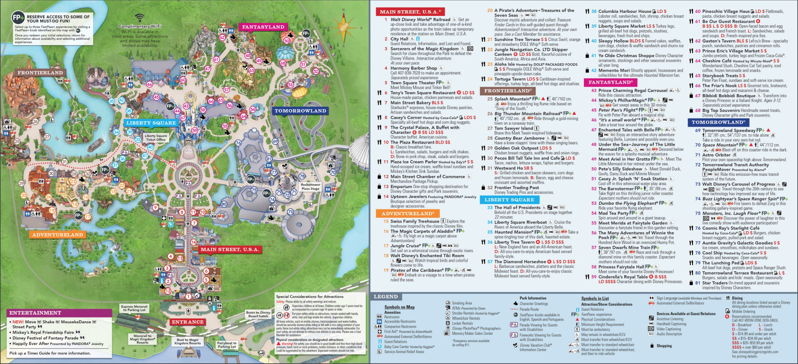
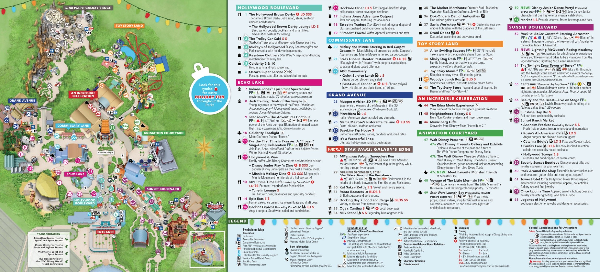
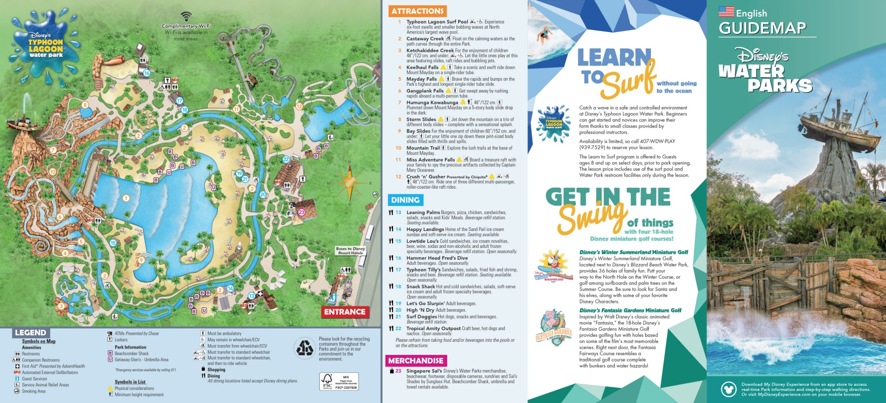
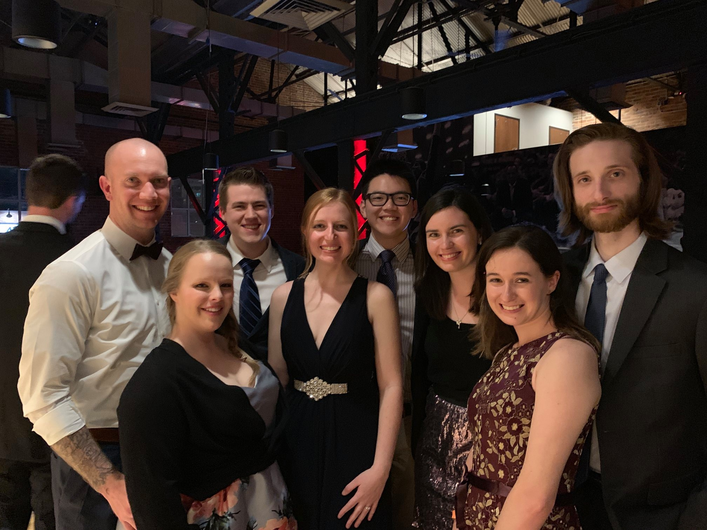
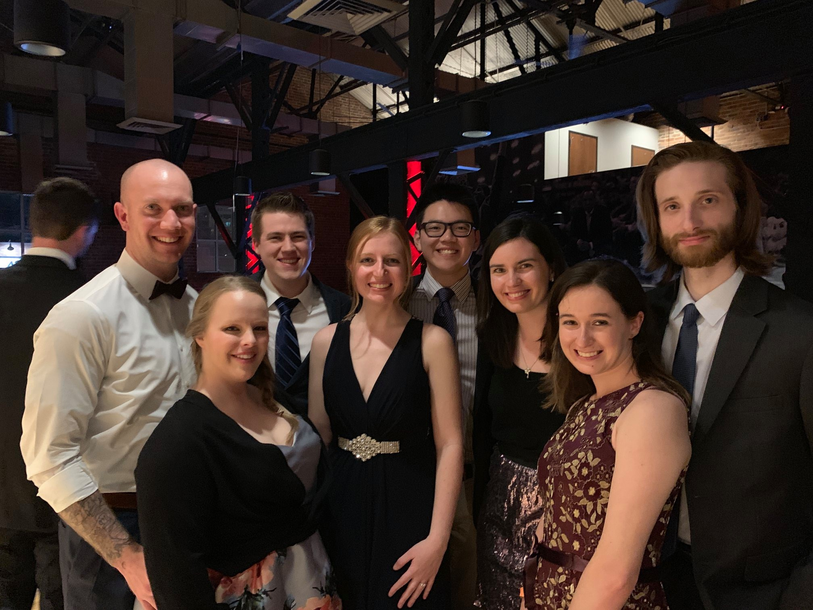
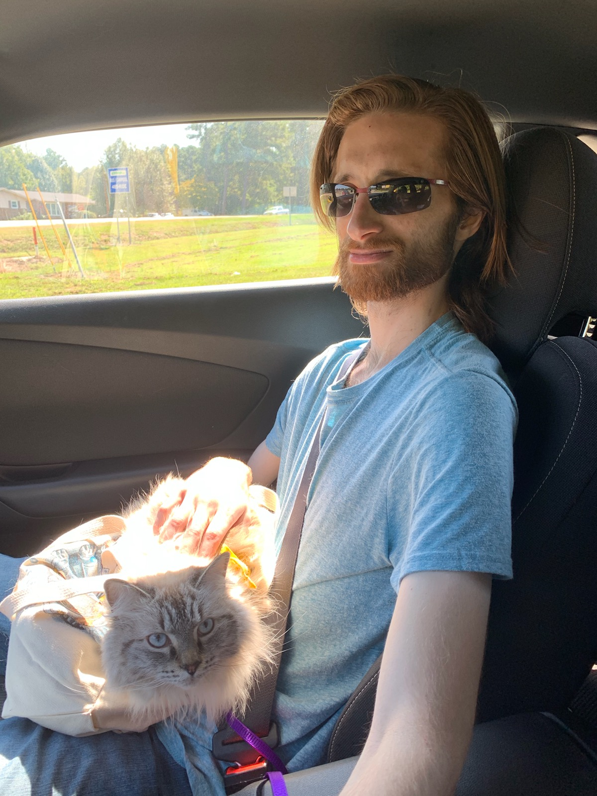
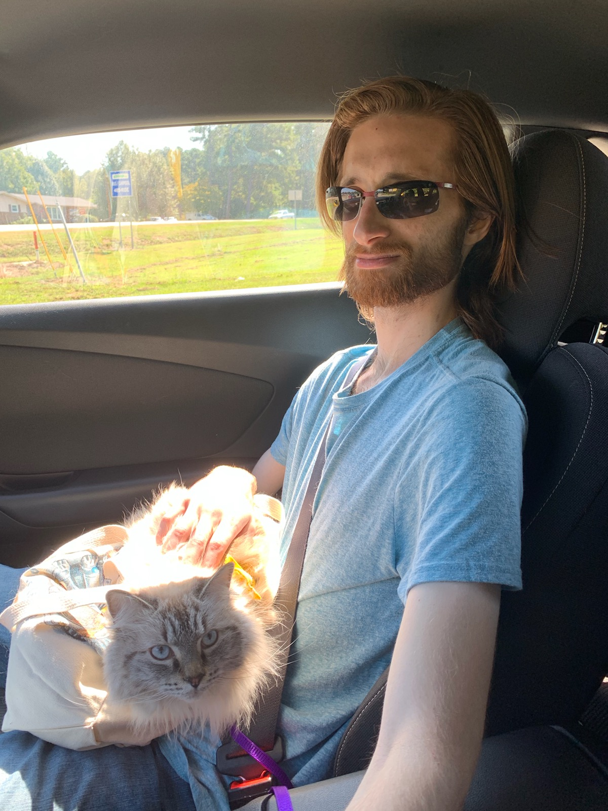

Welcome to Disney for the Souza/Webb wedding! Nicholas and Ashley are very excited to share this experience with their friends and family. There is plenty to do in Walt Disney World besides the 4 theme parks and 2 water parks. Below is Ashley’s Tips for enduring those parks (and of course where to eat!) along with other non-park options. We hope you have fun celebrating this special occasion with us!
Animal Kingdom
Fair warning: this park can get very hot during the heat of the day because a lot of it is concrete and in the open!
This is a park that has a nice balance of rides and animal Treks: of course the Maharajah Jungle Trek is by far Ashley’s favorite (all the Tigers!). You can also take the train over to Rafiki’s Planet Watch to learn more about conservation, see the veterinary quarters, and possibly get to see a procedure! Fast Passes are nice but not necessary for certain rides, such as Na’vi River Journey.
FastPass best options: Avatar Flight of Passage, Expedition Everest, Dinosaur, Kahli River Rapids (*YOU WILL GET WET!), Tree of Life-It’s Tough to be a Bug! (this is a cute 3D show with Flick- from A Bug’s Life), Kilamanjaro Safari
Ashley’s Tip: I found that waiting in line can also be fun especially after a long day and you no longer have anything pressing to do: Avatar Flight of Passage has a LONG que line HOWEVER; you go through different rooms which makes it really fun and immersive; the art is also very beautiful. I highly recommend at least seeing Avatar area at night, it is very beautiful.
Places to Eat:
- Sit Down:
- Rainforest Café
- Yak and Yeti (DELICIOUS Chicken Marsala)
- Quick Service:
- Flame Tree Barbecue
- Sabu’li Canteen
- Ashley’s Favorite Drink: Rum Blossom-> this delightful beverage is located in Avatar area near the Canteen.

Epcot
This is Ashley’s favorite park. You can go from Mexico to Italy to Morocco to Canada all within hours, make sure to stop and enjoy each and every land! Each one is a treasure trove of snacks, drinks, and trinkets. The best pastries can be found in Norway (Kringla Bakeri Og Kafe) and France (Les Halles Boulangerie-Patisserie). Wine (Ashley’s favorite) can be found in Italy (Tutto Gusto Wine Cellar), and of course for the beer drinkers Ashley has heard that the place for that is Germany (for the wine lover- there are Reislings!). The World Showcase often opens a few hours after Future World so do not be discouraged by all the people at first, once the World Showcase opens people tend to spread out.
Fast Pass Options: Spaceship Earth, Mission SPACE (*Be warned: there are two options a Green and Orange. Orange is an intense journey where you do experience G’s and what it would feel like in space- DO NOT RECOMMEND for those who have heart or blood pressure conditions- Don’t be a fool, Nicholas and Ashley want you at the wedding), Test Track, The Seas with Nemo and Friends, Soarin’ (Ashley’s mom’s favorite), Frozen Ever After (Located in Norway).
Note: The rides to pick and choose depend on your preference, the best lines would be Frozen Ever After. You can sometimes catch Living with the Land at a dull time as well as Gran Fiesta Tour Starring the Three Caballeros (Mexico ride). Most lands either have a ride or a show.
Places to Eat:
- Sit Down:
- Nine Dragons Restaurant (China)
- Via Napoli Ristorante e Pizzeria (Ashley’s brother highly recommends)
- Teppan Edo (Japan)
- Le Cellier Steakhouse (Canada)
- Quick Service:
- Electric Umbrella
- Lotus Blossom Café (Ashley highly recommends the orange chicken and mango smoothie)
- Regal Eagle Smokehouse (Originally Libery Inn America)
- Yorkshire County Fish Shop (Ashley’s Dad’s favorite)

Magic Kingdom
This is Ashley’s Dad’s favorite park-> you really should ride the train that encircles the entirety of the park. It gives great views of each land. Magic Kingdom is set up into a few different areas: you will enter on Mainstreet USA which houses cute shops and eateries. You can then break off into Adventureland, Tomorrowland, or Liberty Square. Ashley highly recommends Adventureland or Tomorrowland and making a full circle through all the lands (which surround the Cinderella Castle): Frontierland, Liberty Square, and Fantasyland.
FastPass Options: The Jungle Cruise, Pirates of the Carribean, Splash Mountain, Thunder Mountain, Space Mountain, The Haunted Mansion, Under the Sea Journey of the Little Mermaid, Peter Pans Flight, The Many Adventures of Winnie the Pooh, Seven Dwarf Mine Train
Other Mentionable rides that you can usually get into without FastPass: The Peoplemover (Tomorrowland), The Carousel of Progress (Tomorrowland), Monster’s Inc. the Laugh Floor (Tomorrowland), Enchanted Tiki Room (Adventureland), Swiss Family Treehouse (Adventureland), Country Bear Jamboree (Frontierland), Mad Tea Party (Fantasyland)
Places to Eat:
- Sit Down:
- Tony’s Town Square Restaurant
- Liberty Tree Tavern
- Be Our Guest Restaurant (Recommend for DINNER)
- Quick service:
- Cosmic Ray’s Starlight Café
- Pecos Bill Tall Tale Inn and Café
- Pinocchio Village House
- Gaston’s Tavern
- Tomorrowland Terrace Restaurant

HollyWood Studios
This park has been through some very recent renovations. There has been the addition of Toy Story Land and now the grand opening of Star Wars Galaxy’s Edge. Make sure to check the park hours (there should be some extensions)! Be aware that this park especially will most likely be PACKED with the new opening of Galaxy’s Edge. Make sure to make some time to stroll down Sunset Boulevard and enjoy the different shops that line the streets.
FastPass best options: Anything for Galaxy’s Edge, specifically Millenium Falcon: Smugglers Run, StarTours, Tower of Terror, Rock ‘n’ Roller Coaster; Anything in ToyStory Land- especially those with small children.
Ashley’s Tip: Like in Animal Kingdom, if you have to wait in line for one of the above, I’d pick Tower of Terror for two reasons: the first is that the wait line in regular que is really pretty (to the point Nicholas and I almost had our wedding ceremony there) AND there usually isn’t a big wait if you wait until night during Fantasmic or a parade (the ride is also more amazing at night). Ashley’s mom suggests that the wait for Millenium Falcon: Smugglers Run is also not a bad ride to wait in line for.
Places to Eat:
- Sit Down (MAKE RESERVATIONS):
- Sci-Fi Dine-In Theater
- Prime Time 50’s Café (Eat your Veggies!)
- Mama Melrose’s Ristorante Italiano
- Quick Service
- ABC Commissary
- PizzeRizzo
- Docking Bay 7 Food and Cargo (Galaxy’s Edge area)
- The drink to try: Ashley’s dad recommends stopping by the Milk Stand in Galaxy’s Edge. Here you can try the Blue Bantha Milk that has the option of some added rum.

Typhoon Lagoon
There are two water parks within the Walt Disney World Resort Area: Blizzard Beach and Typhoon Lagoon. Ashley’s family has always gone to Typhoon Lagoon, so these tips are going to be useful for that park.
It can get really hot in both water parks, so watch out for hot sidewalks and sand.
There are three rides that come highly recommended. The first and foremost is Crushin’ Gusher: a family of three water slides that are a lot of fun: Banana Blaster, Coconut Crusher, and Pineapple Plunger. These are a lot of fun and Ashley can usually spend her whole day in the Crushin’ Gusher area riding the three water slides.
- For those seeking a bigger thrill: try Humunga Kowabunga. This is a plummeting slide down Mount Mayday. This is a five story high drop water slide that does involve being in the dark.
Ashley’s mom highly recommends Miss Adventure Falls for the family oriented tube ride, as well as relaxing in Castaway Creek (a lazy river that encompasses the park). For the smaller children: there is Ketchakiddee Creek (an area for small children featuring rafts, water jets, and slides).
Places to Eat:
- Quick Service:
- Grab a sandwich hot dog, or hamburger at Typhoon Tilly’s or Leaning Palms

Outside the Parks
Disney Springs:
This is an outdoor shopping area that houses the coolest of shops and fun restaurants and bars. This is a great place to walk around and buy Disney merchandise, or take a break and have ice cream at Ghirardelli or dinner and a movie at the AMC Dine In. There are tons of different areas and shops to explore!
Sit Down Restaurants: Rainforest Cafe and T-Rex are highly recommended; everywhere is delicious though
Ashley’s favorite watering hole: Jock’s Lindsey’s Hanger Bar (Cool-Headed Monkey is a must try)
Learn more here: https://www.disneysprings.com/
Hotels/Resorts:
This is a bit of a weird category, but “Hotel Hopping” is a pastime of the Souza family that is just fun and relaxing. What you do is either take a bus to one of the three main Magic Kingdom hotels (Contemporary, Polynesian, or Floridian), or to Magic Kingdom and get on the monorail. This is a great way to see decorations (for fall or Christmas), and enjoy Disney without the parks.
Contemporary: stop off and enjoy the gardens of the Contemporary Resort. You can go through shops on the second floor and see Chef Mickey’s (a cute sit down restaurant that overlooks the Seven Seas Lagoon).
Polynesian Resort: also walk through the many tropical gardens and enjoy the shops on the first and second floor of the Main House. Grab a Dole Whip (with or without rum), enjoy it with the sound of the waves or in the air conditioning inside the main area. This hotel houses the Polynesian Luau Show as well as the restaurant Ohana which serves family style entrees (best for breakfast or dinner).
Grand Floridian Resort and Spa: On the monorail, you will see the wedding pavilion as you pass from The Polynesian to the Floridian. At the Floridian, take a break and lounge on the Victorian couches and listen to the live band or grand pianist. You can also walk through the shops and enjoy the outdoor seating area within the gardens. Or take a day and enjoy the spa!
Fantasia Mini Golf:
This is an 18 hole miniature golf course inspired by Disney’s Fantasia. This is located in the Epcot Hotel area: near the Swan and Dolphin Hotel. This is a fun afternoon or morning adventure that will allow some friendly competition amongst friends and family. It truly is A LOT of fun!
For those who are more serious about golfing, there are Golf Courses at the Walt Disney World Resort: Disney’s Palm Golf Course, Disney’s Magnolia Golf Course, Disney’s Lake Buena Vista Golf Course, and Disney’s Oak Trail Golf Course. For more information visit: golfwdw.com
Be sure to check out your resort hotel, there are gems hidden everywhere from restaurant cuisines: from beignets at Port Orleans French Quarter to The Kitchen Sink Sundae at Beaches and Cream at Disney’s Beach Club Resort, to movie nights by the pool.
This is just a snapshot of what each park has to offer, feel free to go on the disney website for more information and planning materials. Forge your own vacation, but hopefully these maps and notes will give you a starting place of what you might want to try! Have fun and Nicholas and Ashley cannot wait to see you at their wedding!


 


 
